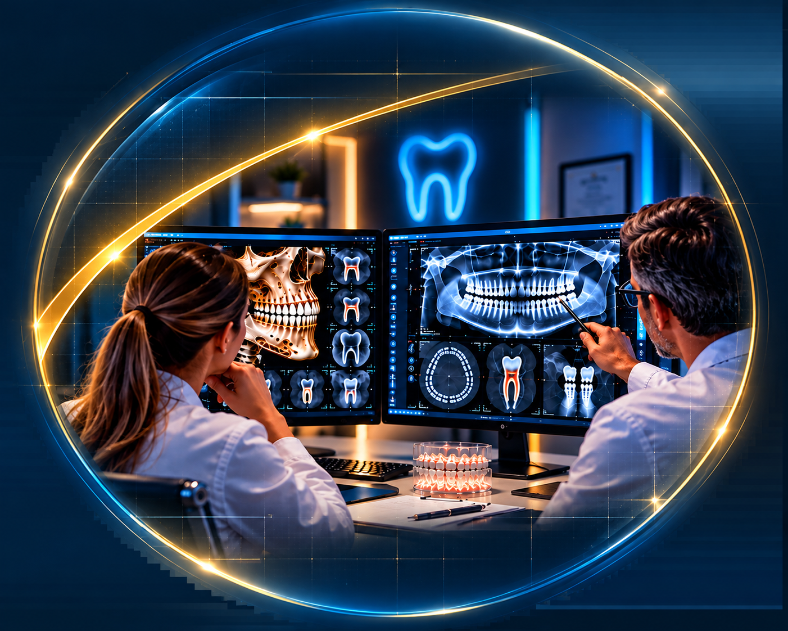

A EMPRESA
Idealizada por especialistas, a Premium Laudos nasceu com o propósito de auxiliar o colega no diagnóstico e na tomada de decisão clínica, contribuindo para um planejamento mais preciso e para a definição de tratamentos seguros, eficazes e individualizados para cada paciente.
